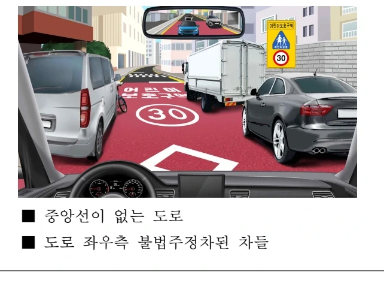

839. Hai cách lái xe nào là an toàn nhất khi lưu thông trên đường sau?

- ①Tạm dừng trước khi đến gần xe đạp.
- ②Khi đi qua vạch sang đường phải tạm dừng ở vạch dừng.
- ③Đang có khoảng cách gần với xe sau nên tăng tốc để tăng khoảng cách.
- ④Không có người đi trên vạch sang đường nên cứ thế đi qua.
- ⑤Liên tục nhấn còi và đi chậm qua.
Xem đáp án
Đáp án
① Tạm dừng trước khi đến gần xe đạp.
② Khi đi qua vạch sang đường phải tạm dừng ở vạch dừng.
Căn cứ
Dự đoán rủi ro. Ôtô vi phạm dừng, đỗ trong khu vực bảo vệ trẻ em được xác định. Người lái xe đi qua khu vực bảo vệ trẻ em phải luôn nhớ rằng một trong những đặc điểm thể chất của trẻ em là “tầm vóc nhỏ bé”, khiến các em dễ bị che khuất bởi xe dừng hoặc đỗ sai quy định. Trong hình ảnh, một chiếc xe đạp đang cố băng qua đường phía trước chiếc ô tô màu xám ở bên trái. Trong những trường hợp này, bạn phải dừng lại ngay cả khi đó không phải là lối qua đường dành cho người đi bộ. Điều 12, khoản 3 Luật Giao thông đường bộ. Người điều khiển ô tô, ngựa hoặc xe điện phải tuân thủ các biện pháp theo khoản 1 trong khu vực bảo vệ trẻ em và khi lái xe phải chú ý đến sự an toàn của trẻ em. Điều 27, khoản 7 Luật Giao thông đường bộ. Người điều khiển ô tô hoặc xe điện phải tạm thời dừng lại trước lối qua đường dành cho người đi bộ (liên quan đến vạch dừng nếu có vạch dừng) nơi không có tín hiệu giữa các lối qua đường được lắp đặt trong khu vực bảo vệ trẻ em theo Điều 12 (1), bất kể có người đi bộ băng qua hay không.
Phần căn cứ là bản dịch máy để tham khảo.